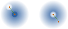

Light scattering from a quantum-degenerate Bose gas
Matthew Chilcott, Kjærgaard Lab
quantum-degenerate gas


quantum-degenerate Bose gas

quantum-degenerate Bose gas

Light scattering from quantum-degemerate Bose gas

Bose-Einstein statistics give enhancement.
Transition \(\left|1\right> \to \left|2\right>\)
Bose-Einstein statistics give enhancement.
\(C a_2^\dagger a_1 \left|\psi_1\right>\)
\( = C \sqrt{N_1(N_2 + 1)} \left|\psi_2\right>\)
\(\mathcal{P}_{1\to 2} =|C|^2 N_1(N_2 + 1) \)
Bose-Einstein statistics give enhancement.
Structure factor \(S(\vec{q}) = 1 + \left<n(\vec{r}, \vec{p} + \vec{q})\right>\)
Structure factor \(S(\vec{q}) = 1 \pm \left<n(\vec{r}, \vec{p} + \vec{q})\right>\)
Fermi vs Bose

Bosonic Enhancement
\(S(\vec{q}) = 1 \pm \left<n(\vec{r}, \vec{p} + \vec{q})\right>\)
Outgoing photon direction well defined?
Superradience
Superradience


Bump


Further Questions:
Cause of the bump?
Enhancement
Depletion
Further Questions:
Interaction with superradience?
Further Questions:
Comparative equilibrium system?